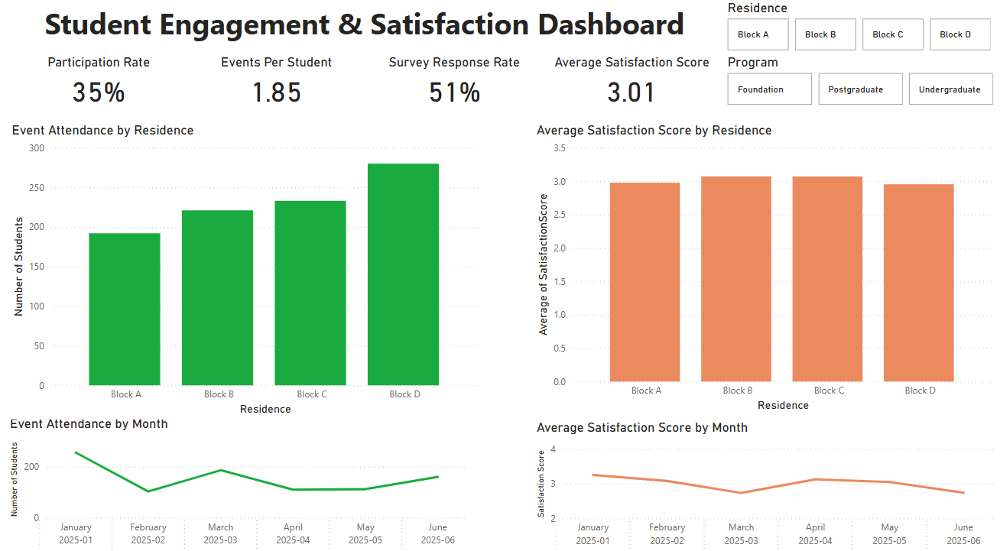
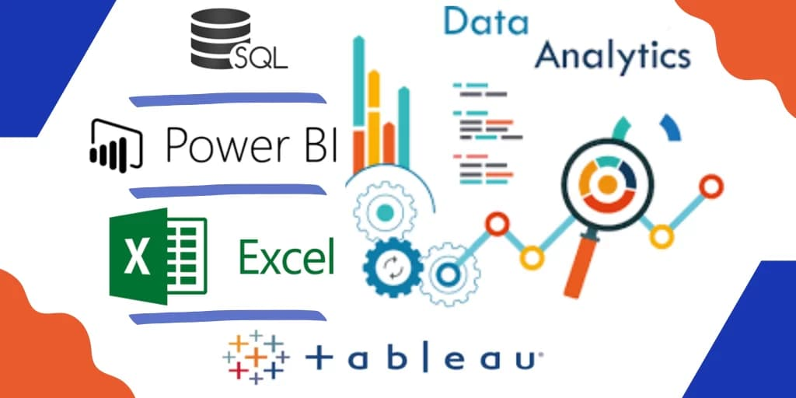

An interactive Power BI dashboard analyzing student participation and satisfaction across residence halls and academic programs. Features KPIs, monthly trends, and visual breakdowns by residence, with slicers for filtering by program and residence. Built to support data-driven decisions in student affairs and programming.
A dynamic 45-minute workshop designed to empower staff and students with practical skills using ChatGPT and Microsoft Power Automate. Participants learn how to streamline routine tasks, boost productivity, and confidently apply AI tools in their daily workflows through interactive demos and collaborative exercises.

A Python-based sentiment analysis project using TextBlob to analyze student residence feedback. Includes sentiment classification, time-series trend analysis, distribution charts, and word clouds. Highlights skills in Python, NLP, and data visualization to support actionable insights in residential life.

A curated overview of key technical skills across data analytics, automation, and digital tools. Highlights proficiency in Power BI, Python, SQL, Excel, and AI tools, with real-world applications in reporting, process optimization, and innovation projects.